一、PEX简介：
PXE(Preboot Execution Environment)：预启动执行环境
PXE是由Intel设计的协议，它可以使计算机通过网络而不是从本地硬盘、光驱等设备启动。
基于Client/Server的网络模式，支持远程主机通过网络从远端服务器下载
映像，并由此支持通过网络启动操作系统
PXE可以引导和安装Windows,linux等多种操作系统
PXE的工作原理：
1)Client向PXE Server上的DHCP发送IP地址请求消息，DHCP检测Client是否合法（主要是检
测Client的网卡MAC地址），如果合法则返回Client的IP地址，同时将启动文件pxelinux.0的
位置信息一并传送给Client
2)Client向PXE Server上的TFTP发送获取pxelinux.0请求消息，TFTP接收到消息之后再向Client
发送pxelinux.0大小信息，试探Client是否满意，当TFTP收到Client发回的同意大小信息之后，
正式向Client发送pxelinux.0
3)Client执行接收到的pxelinux.0文件
4)Client向TFTP Server发送针对本机的配置信息文件（在TFTP 服务的pxelinux.cfg目录下），
TFTP将配置文件发回Client，继而Client根据配置文件执行后续操作。
5)Client向TFTP发送Linux内核请求信息，TFTP接收到消息之后将内核文件发送给Client
6)Client向TFTP发送根文件请求信息，TFTP接收到消息之后返回Linux根文件系统
7)Client启动Linux内核
8)Client下载安装源文件，读取自动化安装脚本
由此可见，要想实现PXE安装系统，首先要先搭建DHCP以及tftp服务器，我们接下来先介绍如何搭
建**一台DHCP以及tftp服务器。**
二、实验：模拟搭建DHCP服务器
前期准备：准备一台CentOS7虚拟机作为DHCP服务器；网卡设为仅主机模式，设置固定IP地址，
关闭虚拟机的DHCP服务
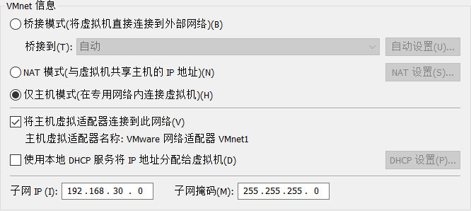
1.关闭iptables，selinux服务
2.安装DHCP服务包
yum install dhcp
3.尝试启动dhcp服务
systemctl start dhcpd.service
我们发现dhcpd服务启动失败，原因是未配置dhcp.conf文件
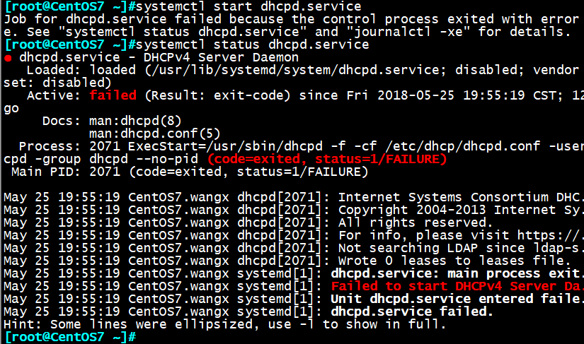
4.系统自带的dhcp.conf是空文件，我们找到安装包自带的example进行修改
rpm –ql dhcp | grep example
cp /usr/share/doc/dhcp-4.2.5/dhcpd.conf.example /etc/dhcp/dhcp.conf
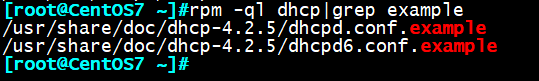
5.修改dhcp配置文件
vim dhcp.conf
其中全局语句块和subnet语句块均可使配置生效，subnet语句块优先级高于全局语句块
全局语句块：
# option definitions common to all supported networks…
option domaim-name “wxlinux.com” 指定获取主机域后缀
option domain-name-servers 114.114.114.114,8.8.8.8 指定DNS，可选
default-least-time 86400 结合生产环境，ip越充足，租期越大越好
max-lease-time 100000 最大租期时间
subnet语句块：
# This is a very basic subnet declaration.
subnet 192.168.30.0 netmask 255.255.255.0 {
range 192.168.30.10 192.168.30.100; 指定ip地址范围
option router 192.168.30.1 指定网关
}
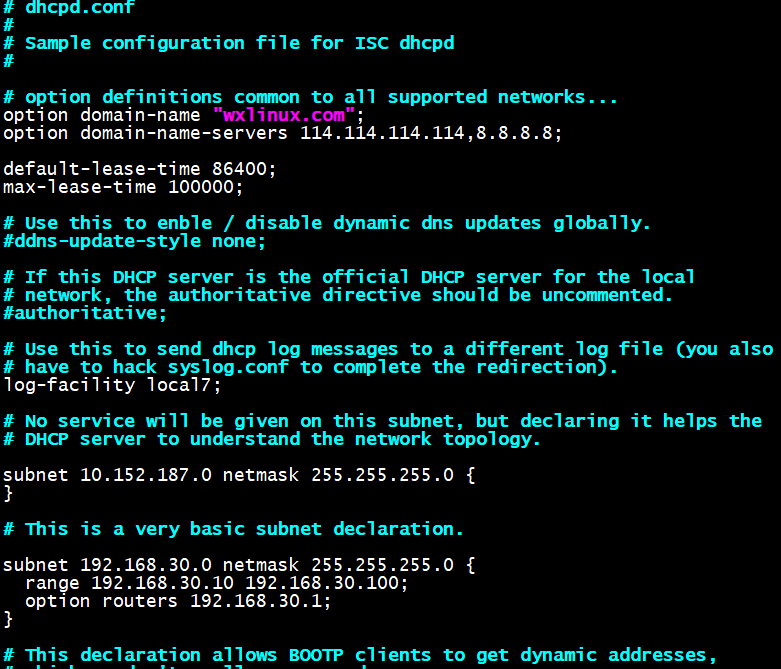
6.再次尝试启动dhcpd服务，并设置开机自启动
systemctl start dhcpd.service
systemctl enable dhcpd.service
发现这次没有报错，dhcpd服务顺利启动
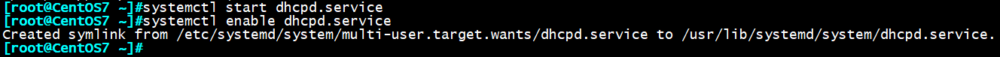
7.切换到另外一台CentOS6虚拟机
我们看到现在的ip地址为：192.168.30.158
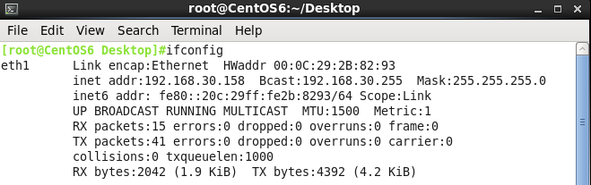
执行命令重新获取ip地址：
dhclient –d
新获取的地址为192.168.30.11，证明dhcp服务已搭建成功
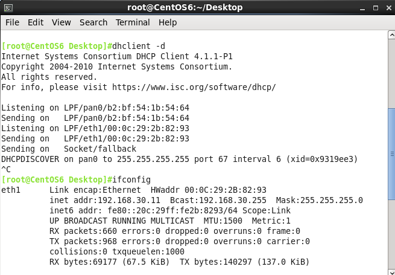
利用systemctl status dhcpd 命令可观察dhcp分发地址的全过程
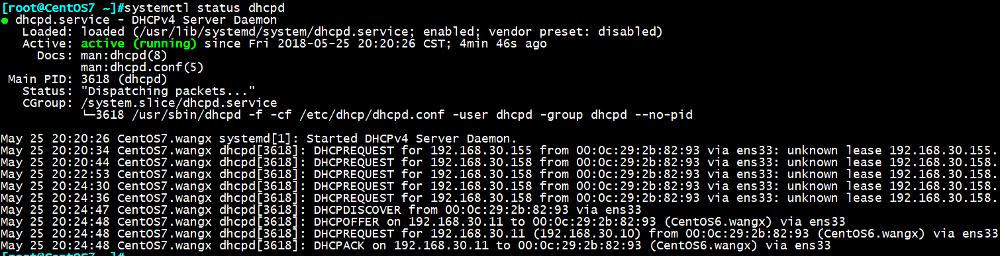
三、实验：模拟搭建tftp服务器
前期准备：关闭服务器端，客户端的SELinux，以及防火墙
tftp服务器端：CentOS7:192.168.30.10
tftp客户端：CentOS6:192.168.30.11
tftp服务器端操作：
1.安装tftp服务
yum install tftp
yum install tftp-server
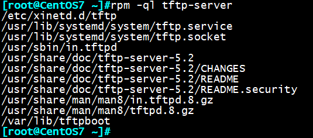
2.开启服务
CentOS6:
chkconfig tfcp on
service xinted restart
chkconfig tfcp enable
CentOS7:
systemctl start tftp.socket
systemctl enable tftp.socket
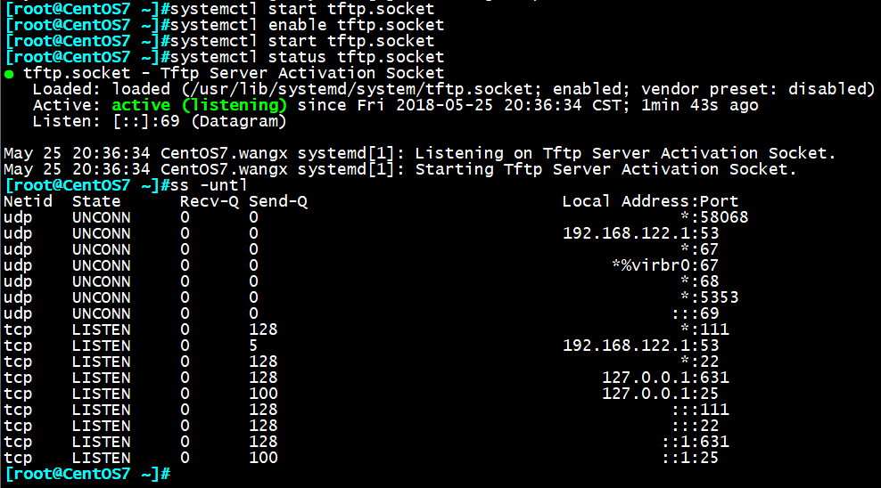
3测试tftp服务
拷贝mbr7.bak文件到tftp目录下
cp mbr7.bak /var/lib/tftpboot/
客户端：
tftp 192.168.30.10
get menu.c23
文件通过tftp传输成功
![1%Y5[PKHF}VCZB9PHN74UB
至此，dhcp及tfcp已在CentOS7上搭建完成，下面来实验用PEX安装CentOS系统
四、实验：实现CentOS7的PXE安装
前期准备：关闭SELinux策略，firewall防火墙
事先准备好应答文件ks7_mini.cfg，**ks7_desktop.cfg**
服务器端：CentOS7:192.168.30.10
1 安装必要包，并开启httpd服务
yum install dhcp tftp-server httpd syslinux
systemctl enable dhcpd httpd tftp.socket
systemctl start httpd
2.准备yum源
mkdir /var/www/html/centos/7 -pv
添加开机自动挂载光盘
vim /etc/fstab
/dev/sr0 /var/www/html/centos/7 iso9660 defaults 0 0
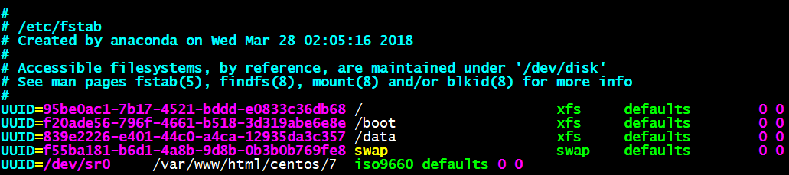
挂载磁盘
mount dev/sr0 /var/www/html/centos/7
重新读取磁盘挂载
mount -a
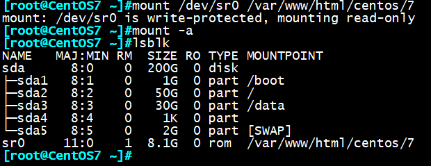
2.制作ks.cfg文件
mkdir /var/www/html/ksdir/7 -pv
cp /root/ ks7_desktop.cfg /var/www/html/ksdir/7/ks7_desktop.cfg
cp /root/ ks7_mini.cfg /var/www/html/ksdir/7/ks7_mini.cfg
chmod +r /var/www/html/ksdir/7/ks7_desktop.cfg
浏览器确认ks7.cfg能正常访问
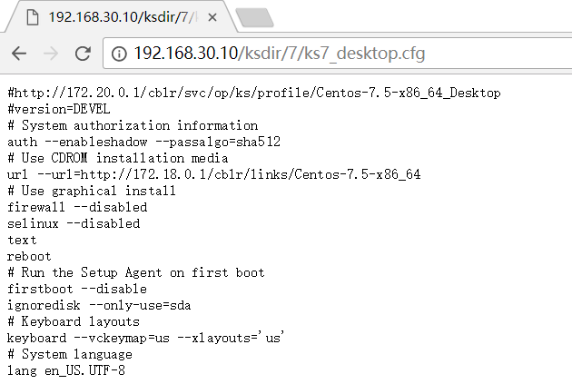
3.修改ks.cfg文件
#Use CDROM installation media
url –url=http://192.168.30.7/centos/7
#Use graphical install
text
#网卡
onboot=on
我们还可以在此添加ssh基于key的认证，使得新系统安装后可直接ssh连接
添加ssh基于key验证：
%post
mkdir /root/.ssh
cat > /root/.ssh/authorized_keys << EOF
ssh-rsa AAABBB…（服务器自授权公钥）
EOF
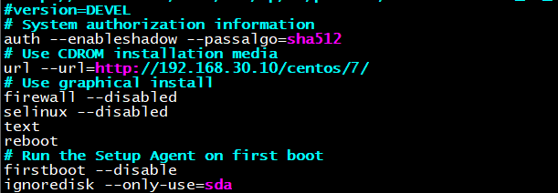
4.配置dhcp服务
subnet 192.168.30.0 netmask 255.255.255.0 {
range 192.168.30.10 192.168.30.100;
option routers 192.168.30.254;
option domain-name-servers 8.8.8.8;
next-server 192.168.30.7;
filename “pxelinux.0”;
}
syetemctl dhcpd start
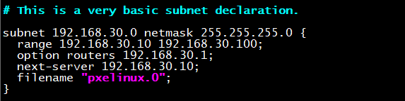
5.准备PXE相关文件
cd /var/lib/tftpboot/
mkdir pxelinux.cfg/
cp /usr/share/syslinux/pxelinux.0 /var/lib/tftpboot
rpm -ql syslinux|grep menu.c32
cp /usr/share/syslinux/menu.c32 /var/lib/tftpboot
cp /misc/cd/isolinux/{vmlinuz,initrd.img} /var/lib/tftpboot
cp /misc/cd/isolinux/isolinux.cfg /var/lib/tftpboot/pxelinux.cfg/default
最终目录树如下：
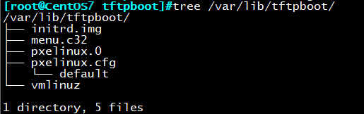
6.制作菜单
vim /var/lib/tftpboot/pxelinux.cfg/default
default menu.c32
删掉背景，修改title等
menu title Auto Install System
CentOS7:
见图
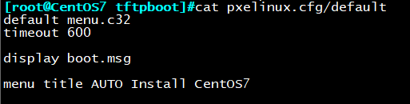
设置启动菜单：
menu title Auto Install CentOS
label desktop
menu label Install ^Desktop CentOS 7
kernel vmlinuz
append initrd=initrd.img ks=http://192.168.30.7/ksdir/7/ks7_desktop.cfg
label mini
menu label Install ^Mini CentOS 7
kernel vmlinuz
append initrd=initrd.img ks=http://192.168.30.7/ksdir/7/ks7_mini.cfg
label local
menu default
menu label Boot from ^local drive
localboot 0xffff
menu end
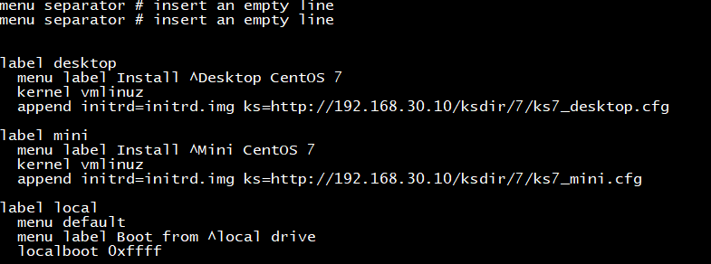
7.测试安装，新开一台虚拟机：
网卡设置为仅主机，正常启动将出现安装界面
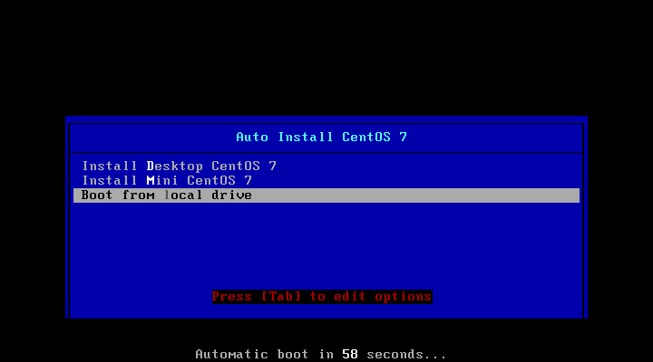
我们选择Desktop安装
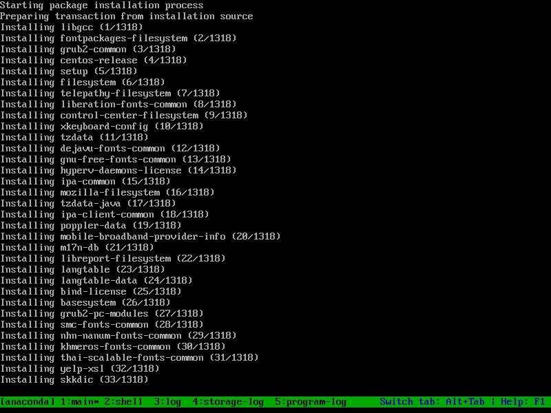
五、实验：在CentOS7实现PXE安装CentOS6,7双系统
前期准备：关闭SELinux安全策略，关闭防火墙；
事先准备好应答文件ks6_mini.cfg，**ks7_desktop.cfg**
服务器：CentOS7:192.168.30.10
1 安装必要服务包
yum install dhcp tftp-server httpd syslinux
systemctl enable dhcpd httpd tftp.socket
systemctl start httpd
2 准备YUM源
mkdir /var/www/html/centos/{6,7}/ -pv
vim /etc/fstab 加下面行
/dev/sr0 /var/www/html/centos/6 iso9660 defaults 0 0
/dev/sr1 /var/www/html/centos/7 iso9660 defaults 0 0
mount -a
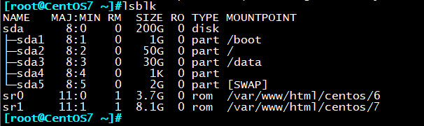
3 准备ks文件
mkdir /var/www/html/ksdir/{6,7} -pv
cp /root/ks6_mini.cfg /var/www/html/ksdir/7/ks6_mini.cfg
cp /root/ks7_desktop.cfg /var/www/html/ksdir/7/ks7_desktop.cfg
chmod +r /var/www/html/ksdir/7/ks7_desktop.cfg
[root@centos7 tftpboot]#tree /var/www/html/ksdir/
/var/www/html/ksdir/
├── 6
│ └── ks6_mini.cfg
└── 7
└── ks7_desktop.cfg
最好确认下应答文件是否可以httpd正常访问
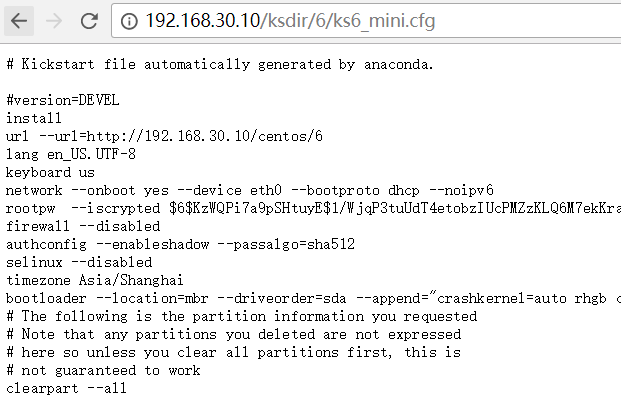
4 配置dhcp服务
cp /usr/share/doc/dhcp-4.2.5/dhcpd.conf.example /etc/dhcp/dhcpd.conf
vim /etc/dhcp/dhcpd.conf
[root@centos7 tftpboot]#cat /etc/dhcp/dhcpd.conf
option domain-name “magedu.org”;
option domain-name-servers 114.114.114.114,1.1.1.1;
option routers 192.168.30.200;
default-lease-time 86400;
max-lease-time 100000;
subnet 192.168.30.0 netmask 255.255.255.0 {
range 192.168.30.10 192.168.30.100;
option routers 192.168.30.254;
option domain-name-servers 8.8.8.8;
next-server 192.168.30.17;
filename “pxelinux.0”;
}
systemctl start dhcpd
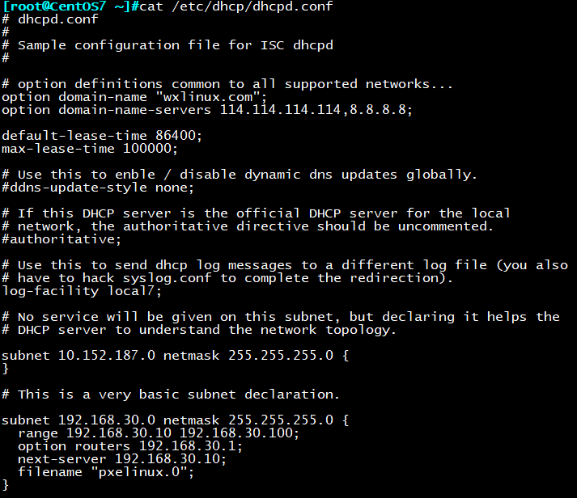
5 准备PXE相关文件
rpm -ql syslinux
mkdir /var/lib/tftpboot/pxelinux.cfg/
cp /usr/share/syslinux/pxelinux.0 /var/lib/tftpboot/
cp /usr/share/syslinux/menu.c32 /var/lib/tftpboot/
mkdir /var/lib/tftpboot/centos{6,7}
cp /var/www/html/centos/7/isolinux/{vmlinuz,initrd.img} /var/lib/tftpboot/centos7/
cp /var/www/html/centos/6/isolinux/{vmlinuz,initrd.img} /var/lib/tftpboot/centos6/
cp /var/www/html/centos/7/isolinux/isolinux.cfg /var/lib/tftpboot/pxelinux.cfg/default
最终目录结构如下：
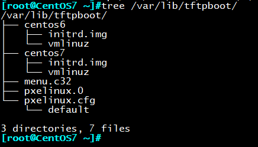
6.修改启动菜单
vim /var/lib/tftpboot/pxelinux.cfg/default
default menu.c32
timeout 600
menu title AUTO Install CentOS6 or 7
label centos7
menu label ^Install Desktop CentOS 7
kernel centos7/vmlinuz
append initrd=centos7/initrd.img ks=http://192.168.30.17/ksdir/ks7_desktop.cfg
label centos6
menu label install ^Mini CentOS 6
menu default
kernel centos6/vmlinuz
append initrd=centos6/initrd.img ks=http://192.168.30.17/ksdir/ks6_mini.cfg
label local
menu label Boot from ^local drive
localboot 0xffff
menu end
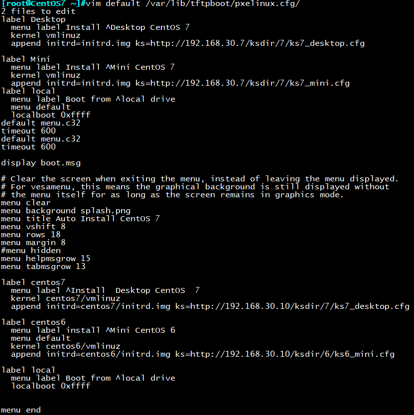
6 客户端测试安装
![950`G(0J]]EL4JLFN_I(UP6](http://www.178linux.com/wp-content/uploads/2018/05/950G0JEL4JLFN_IUP6.png)
一般能到达安装包界面就证明安装没问题了
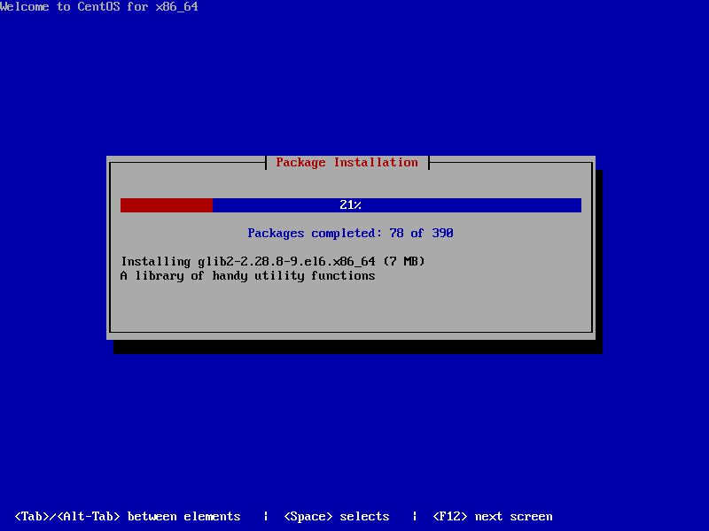
登录成功：
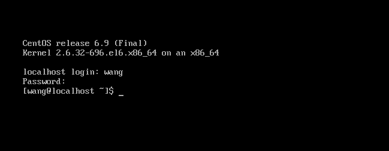